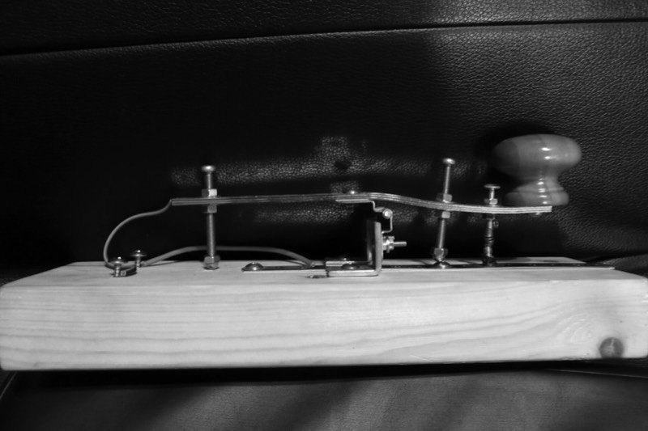

How to learn Morse code
What the code is made of, why these courses teach the way they do, a plan you can follow, and how to get on the air.

Timing
Morse is built from one unit of time. A dit lasts one unit and a dah three. Inside a letter, sounds are one unit apart. Letters are three units apart and words seven.
PARIS to scale, 50 units with the space after it. At 20 WPM a unit is 60 ms.
Speed is measured in words per minute using PARIS as the standard word. Twenty WPM means PARIS could be sent twenty times in a minute.
Method
Learn sounds, not pictures
If you learn A as "dot dash" on a chart, you translate twice: sound to picture, picture to letter. Most people who learn that way stall around 10 WPM. These courses never ask you to read a pattern to answer.
Koch method
Psychologist Ludwig Koch found in the 1930s that people learn faster when they start at full speed with only two characters, then add one more each time they copy 90 percent correctly. The Ear Speed course follows his order.
Farnsworth spacing
Letters play at a real speed, around 20 WPM, while the gaps between them stretch out. You get time to think, and each letter keeps the sound it will have on the air. As you improve, raise overall speed under Sound until it matches letter speed.
Habits that matter most
Practice every day, even ten minutes. Two short sessions beat one long one. When you miss a letter, let it go and catch the next one. Chasing a miss costs you the next three.
12 week plan
A typical pace at 15 to 20 minutes a day. Plateaus are normal. Keep showing up and they pass.
| Weeks | Course | Done when |
|---|---|---|
| 1 to 2 | First Letters, all ten classes | You pass the 26 letter review |
| 3 to 5 | Ear Speed, classes 1 to 5 | Class 5 copied at 90% |
| 6 to 8 | Ear Speed 6 to 10, start Sending | All 40 characters at 90% |
| 9 to 10 | Words on the Air, Sending | Callsigns at 85% |
| 11 to 12 | First Contact, real listening | You finish a simulated contact |
On the air
Get licensed
In the US there has been no Morse test since 2007. The entry level Technician license already allows Morse on parts of the 80, 40, 15 and 10 meter bands. Find an exam through the ARRL. Other countries run their own exams.
Listen first
The ARRL station W1AW sends code practice on a published schedule at several speeds. Without a radio you can tune a receiver online at websdr.org and listen near the bottom of the 40 meter band.
Learn the standard exchange
A first contact is CQ, callsigns, a signal report, your name and place, then 73. The First Contact course walks through it and lets you run one.
Find patient operators
CWops runs free CW Academy classes, the Long Island CW Club teaches online at every level, and the Straight Key Century Club holds slow, friendly contacts.
Ask for slower
Send QRS to ask the other station to slow down. Experienced operators expect it and almost always will.